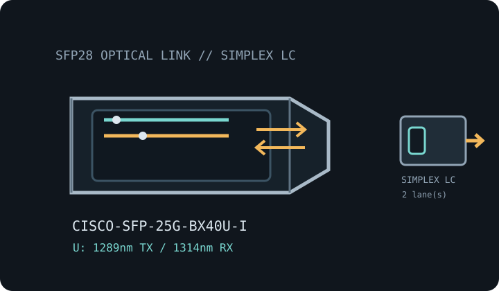

[ MODEL-SPECIFIC OPTICAL NETWORK HARDWARE ]
Cisco SFP-25G-BX40U-I 25GBASE-BR40 Bidirectional SFP28 Transceiver
Industrial 25GbE bidirectional optic with lower-wavelength upstream transmit for a single-strand 40km SMF link. Confirm exact module label and host qualification before installation.

IDENTIFICATION: Match the manufacturer, exact PID/suffix and revision to the current host compatibility listing. Nominal line rate/reach are not measured payload performance.
Model-specific optical specifications
| Dedicated subcategory | SFP transceivers: optical and copper |
|---|---|
| Exact model / ordering SKU | SFP-25G-BX40U-I |
| Form factor and optical type | SFP28 hot-pluggable single-fiber bidirectional optic; upstream (U) 25GBASE-BR40. |
| Ethernet rate | 25Gb/s nominal Ethernet line rate. |
| Wavelength | Approximately 1289nm transmit (1281–1297nm) / 1314nm receive (1306–1322nm). |
| Fiber medium and reach | Single-mode fiber (SMF), up to 40km; uses one strand for both directions. |
| Connector | Simplex LC. |
| DOM / DDM | Digital optical monitoring supported; actual reporting depends on switch/router host implementation. |
| Operating temperature | Industrial operating case temperature: -40°C to 85°C. |
| Host switch/router compatibility caveat | Pair with a Cisco SFP-25G-BX40D-I at the opposite end; the D module transmits in the higher wavelength band and receives in the U module’s transmit band. Check Cisco TMG for exact part/host/release compatibility and confirm port mode, FEC, single-mode fiber quality and the 40km optical budget. |
| Variant / deployment caveat | U and D are complementary endpoints, not interchangeable at both ends. The 40km model is distinct from Cisco’s shorter BXU-I family; use the matching BX40 pair. |
| Measured performance | No measured specimen throughput is claimed; payload depends on host configuration, far-end module, fiber plant, protocol overhead and test method. |
Host qualification and installation
Pair with a Cisco SFP-25G-BX40D-I at the opposite end; the D module transmits in the higher wavelength band and receives in the U module’s transmit band. Check Cisco TMG for exact part/host/release compatibility and confirm port mode, FEC, single-mode fiber quality and the 40km optical budget.
U and D are complementary endpoints, not interchangeable at both ends. The 40km model is distinct from Cisco’s shorter BXU-I family; use the matching BX40 pair.
Inspect and clean fiber end faces, retain dust caps during storage, observe ESD precautions and never look into an active optical port. Record the host, port, software release, module label and DOM readings where available.
Manufacturer sources
- Cisco 25GBASE SFP28 Modules Data SheetCisco 25GBASE SFP28 Modules Data Sheet lists the BX40 family; Cisco Optics Product Information and TMG provide module and host qualification details.
- Cisco 25-Gigabit Modules product overviewCisco manufacturer overview of its 25GbE interface and transceiver product family.
- Cisco Transceiver Module Group (TMG) compatibility matrixVerify exact transceiver PID against supported host platforms and software releases.
- IEEE 802.3 Ethernet standards familyEthernet PHY and signaling context; vendor-specific module qualifications still apply.
Check current documentation revisions and exact PID before deployment.